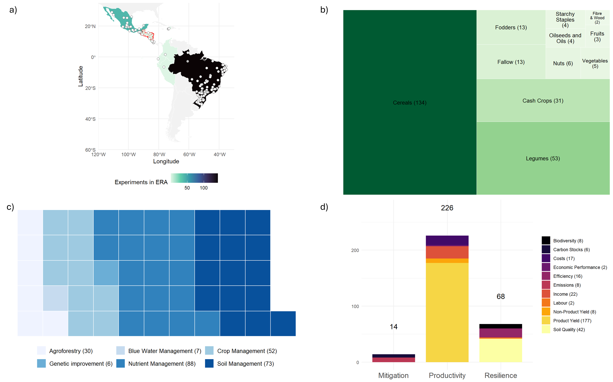

# Set S3 path and initialize
s3 <- s3fs::S3FileSystem$new(anonymous = TRUE)
# This is the ERA s3 bucket
era_s3 <- "s3://digital-atlas/era"
# This is the S3 directory where era data archives can be found
(bundle_dir <- file.path(era_s3, "data", "packaged"))
#> [1] "s3://digital-atlas/era/data/packaged"
# This is the address of the most recent version of era agronomy
era_agronomy_s3<-"s3://digital-atlas/era/data/packaged/era_agronomy_bundle.tar.gz"
# Create a folder to download the most recent version of era agronomy
dl_dir <- "downloaded_data"
dir.create(dl_dir, showWarnings = FALSE)
# Local file path of downloaded agronomy archive
(bundle_local <- file.path(dl_dir, basename(era_agronomy_s3)))
#> [1] "downloaded_data/era_agronomy_bundle.tar.gz"
# Name of folder to extract downloaded archive to
(extract_dir <- file.path(dl_dir, tools::file_path_sans_ext(tools::file_path_sans_ext(basename(era_agronomy_s3)))))
#> [1] "downloaded_data/era_agronomy_bundle"
update <- TRUE # Set to FALSE if you want to skip download/extract
if(update){
# Download archive
s3$file_download(era_agronomy_s3, bundle_local, overwrite = TRUE)
# Extract archive
dir.create(extract_dir)
utils::untar(bundle_local, exdir = extract_dir)
}
# Locate parquet files
compiled_files <- list.files(extract_dir, pattern = "\\.parquet$", full.names = TRUE)
# Just load the first one if you're sure there's only one relevant
compiled_file <- compiled_files[1]
# Load into R
acdc_dat <- arrow::read_parquet(compiled_file)ACDC Analysis

lac_countries<-c("Ecuador","Brazil","Peru","Guatemala","Colombia","Venuezela","Costa Rica",
"Honduras","Nicaragua","Haiti","Mexico","El Salvador")
acdc_dat<-acdc_dat[Country %in% lac_countries]
# === 1) Load your agronomic site data ===
acdc_dat <- acdc_dat %>%
mutate(
Latitude = as.numeric(Latitude),
Longitude = as.numeric(Longitude)
) %>%
filter(!is.na(Latitude) & !is.na(Longitude))
sites_sf <- st_as_sf(acdc_dat, coords = c("Longitude", "Latitude"), crs = 4326, remove = FALSE)
# === 2) Load and clean the Dry Corridor shapefile ===
dry_corridor <- st_read("ERA-Agroecology_files/CorredorSeco.shp", quiet = TRUE) %>%
st_make_valid() %>%
st_transform(4326)
cat("✅ Loaded dry corridor with", nrow(dry_corridor), "features\n\n")
#> ✅ Loaded dry corridor with 4037 features
# Union all polygons into one outline
dry_corridor_union <- dry_corridor %>%
st_union() %>%
st_sf(geometry = .) %>%
st_make_valid()
# === 3) Identify points in the Dry Corridor ===
inside_idx <- st_within(sites_sf, dry_corridor_union, sparse = FALSE)[, 1]
# Count distinct papers inside the corridor
corridor_papers <- sites_sf[inside_idx, ] %>%
pull(Code) %>%
unique() %>%
length()
message("Dry Corridor contains ", corridor_papers, " distinct papers")
# === 4) Country-level counts (for whole dataset) ===
country_counts <- acdc_dat %>%
group_by(Country) %>%
summarise(N_Papers = n_distinct(Code), .groups = "drop") %>%
arrange(desc(N_Papers))
# === 5) Load world basemap and join counts ===
world <- ne_countries(scale = "medium", returnclass = "sf") %>%
filter(continent %in% c("North America", "South America")) %>%
mutate(admin = case_when(
admin == "United States of America" ~ "USA",
admin == "Dominican Republic" ~ "Dominican Rep.",
TRUE ~ admin
)) %>%
rename(Country = admin)
map_data <- world %>%
select(Country, geometry) %>%
left_join(country_counts, by = "Country")
# === 6) Build the map ===
map <- ggplot() +
geom_sf(data = map_data, aes(fill = N_Papers), color = "white") +
geom_sf(data = dry_corridor_union, fill = NA, color = "red", size = 1) + # Plot just the union outline
geom_point(data = sites_sf,
aes(x = Longitude, y = Latitude),
shape = 21, color = "black", fill = "white", size = 2, alpha = 0.5) +
scale_fill_viridis_c(option = "mako", direction = -1, na.value = "gray95") +
labs(fill = "Experiments in ERA") +
coord_sf(xlim = c(-120, -30), ylim = c(-60, 35), expand = FALSE) +
theme_minimal() +
theme(legend.position = "bottom")
#map
# === 9) plot for crops ===
prod_counts <- acdc_dat%>%
separate_rows(Product.Subtype, sep = "-") %>%
group_by(Product.Subtype) %>%
summarise(Count = n_distinct(Code), .groups = "drop") %>%
mutate(label = paste0(Product.Subtype, " (", Count, ")"))
tree_plot_crops<- ggplot(prod_counts, aes(area = Count, fill = Count, label = label)) +
geom_treemap(color = "white") +
geom_treemap_text(
colour = "black",
place = "centre",
grow = FALSE, # Disable growing to avoid oversized text
reflow = TRUE,
size = 10 # Adjust this value to control the actual text size
) +
scale_fill_distiller(palette = "Greens", direction = 1, guide = "none") +
theme_minimal() +
theme(
plot.title = element_text(size = 14, face = "bold"),
legend.position = "none"
)
#tree_plot_crops
# === 10) plot for practices ===
ag_counts <- acdc_dat%>%
separate_rows(Theme, sep = "-") %>%
group_by(Theme) %>%
summarise(Count = n_distinct(Code), .groups = "drop") %>%
mutate(label = paste0(Theme, " (", Count, ")"))
# Define parts per square (e.g. 1 square = 10 studies)
parts_per_square <- 5
# Prepare waffle input
waffle_data <- ag_counts %>%
mutate(
squares = round(Count / parts_per_square)
) %>%
filter(squares > 0) # Drop any 0-square items
# Named vector for waffle
waffle_vec <- setNames(waffle_data$squares, waffle_data$label)
# Waffle plot
waffle_plot_practices<- waffle::waffle(
parts = waffle_vec,
rows = 5,
size = 0.5,
colors = RColorBrewer::brewer.pal(n = nrow(waffle_data), name = "Blues"),
legend_pos = "bottom"
) +
theme(
legend.position = "bottom",
legend.text = element_text(size = 10),
legend.title = element_blank()
) +
guides(fill = guide_legend(nrow = 3, byrow = TRUE))
#waffle_plot_practices
# === 11) plot for outcomes ===
# Count distinct studies per Pillar × Indicator
pillar_counts <- acdc_dat %>%
filter(!is.na(Out.Pillar), !is.na(Out.Ind)) %>%
group_by(Out.Pillar, Out.Ind) %>%
summarise(Count = n_distinct(Code), .groups = "drop")
# Total per indicator (for legend)
legend_labels <- pillar_counts %>%
group_by(Out.Ind) %>%
summarise(Total = sum(Count)) %>%
mutate(Out.Ind.Label = paste0(Out.Ind, " (", Total, ")"))
# Join back to original data with updated labels
pillar_counts <- pillar_counts %>%
left_join(legend_labels, by = "Out.Ind")
# Total per pillar (for top label)
pillar_totals <- pillar_counts %>%
group_by(Out.Pillar) %>%
summarise(Total = sum(Count))
# Plot
stacked_bar_outcomes <- ggplot(pillar_counts, aes(x = Out.Pillar, y = Count, fill = Out.Ind.Label)) +
geom_bar(stat = "identity", width = 0.8) +
geom_text(data = pillar_totals,
aes(x = Out.Pillar, y = Total + 50, label = Total),
inherit.aes = FALSE,
size = 5) +
scale_fill_viridis_d(option = "B") +
theme_minimal() +
theme(
legend.position = "right",
axis.text.x = element_text(size = 14),
axis.title = element_blank(),
legend.title = element_blank()
)
#stacked_bar_outcomes
# === 13) present combined plot ===